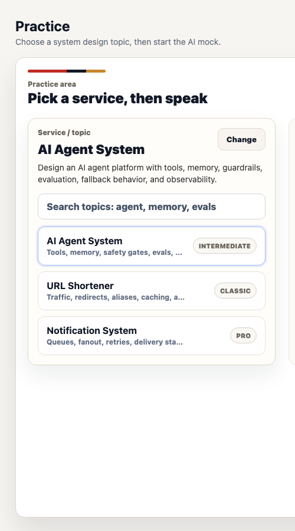

Real product screens
AI interview practice you can actually inspect.
SpeakUp SD combines a serious system design question bank with an AI interview workspace, whiteboard evidence, recording consent, and readiness reports.

Product availability
Live on web. iOS internal beta in TestFlight.The iPhone build is in private device validation before public App Store release.
Why SpeakUp SD
Practice the explanation, not just the diagram.
Browse before signing in, rehearse aloud in a real interview structure, and leave knowing what to practice next.
Explore system design prompts, then use no-AI Open Practice with a timer, local recording, and desktop whiteboard.
Work through requirements, high-level design, technical deep dive, and trade-offs in Simulation or optional Guided Practice.
Keep voice and whiteboard evidence together, then review one combined report, skill signals, and a concrete next drill.
Actual UI
The public page should show the product, not only describe it.
These captures show the current product surfaces: question selection, active interview, recording consent, whiteboard, and reports.



Practice Loop
Browse first. Interview second. Review what happened.
The product separates question discovery from the mock interview flow, then connects voice practice, whiteboard work, and reporting into one reviewable training loop.
Public Surface
A product showcase, not a source-code dump.
This repository keeps the product inspectable through screenshots and public links without exposing private app source code, credentials, prompts, or operational material.